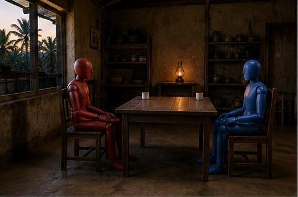
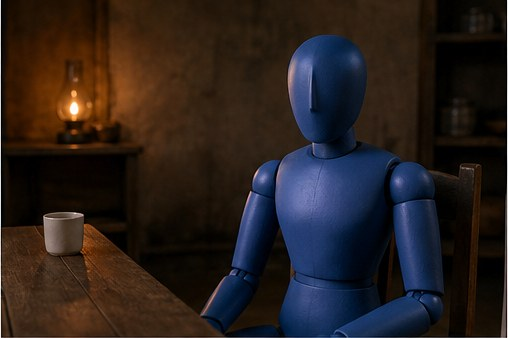
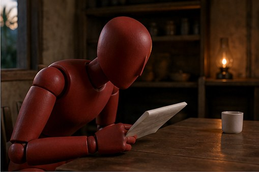
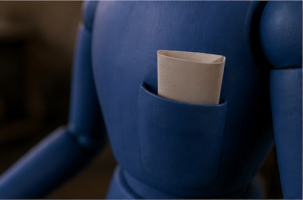
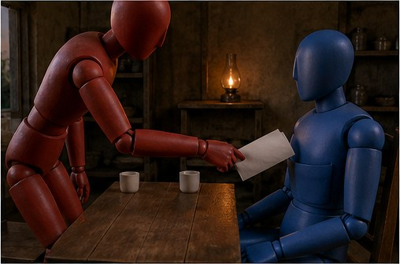
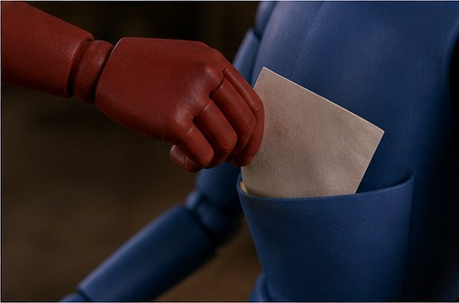
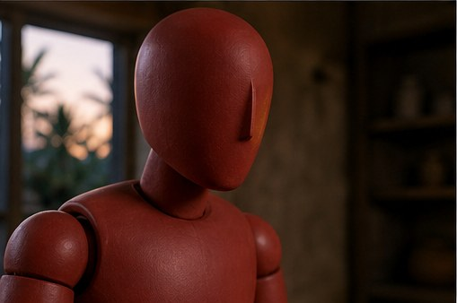
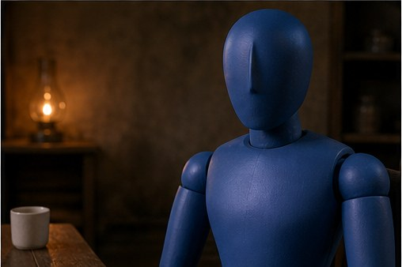
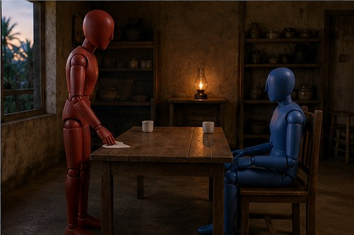

For each shot: what was PAINTED, what THE PLAN says that camera should see (drawn by code from the floor plan), and where that camera stands. The table says, point by point, whether the painting matches the plan.
17 ✅ matches · 0 🟡 partly · 5 ❌ wrong

Setup C1 (master) · WS master · 28 mm · Nimal left, Saman right, two tea cups centre · N looks right of frame at S
| Place | ✅ | window left, lamp, table, cups |
| Sides | ✅ | Nimal (red) left, Saman (blue) right |
| Size | ✅ | wide |

Setup C2 (reverse) · MCU single · 110 mm · Saman centre · S looks left of frame at N
| Place | ✅ | lamp and shelves behind |
| Size | ✅ | medium close-up |
| Eyeline | ❌ | planned: looks frame left at Nimal; painted: into the lens |

Setup C3 (reaction) · MCU single · 100 mm · Nimal centre · N looks right of frame at deed
| Place | ✅ | window, shelves, lamp |
| Size | ✅ | medium close-up |
| Props | ❌ | the deed is in Nimal's hands; he only NOTICES it here (he takes it in shot 5) |

Setup C4 (detail) · INSERT insert · 85 mm · Saman centre, land deed centre
| Props | ✅ | the folded deed in Saman's pocket |
| Size | ✅ | insert |

Setup C3 (reaction) · MS two_shot · 50 mm · Nimal left, Saman right, two tea cups centre, land deed left · N looks left of frame at deed
| Sides | ✅ | Nimal left reaching across, Saman right |
| Size | ✅ | medium two-shot |
| Action | ✅ | the grab, the deed coming out of the pocket |

Setup C4 (detail) · INSERT insert · 85 mm · Nimal centre, land deed centre
| Action | ❌ | planned: the deed struck on the TABLE; painted: the hand at the pocket again (the plan's prop state still said 'at the pocket') |

Setup C3 (reaction) · CU single · 150 mm · Nimal centre · N looks right of frame at S
| Size | ✅ | close-up |
| Eyeline | ❌ | planned: looks frame right at Saman; painted: into the lens |

Setup C2 (reverse) · CU single · 150 mm · Saman centre · S looks left of frame at N
| Size | ✅ | close-up |
| Eyeline | ❌ | planned: looks frame left at Nimal; painted: into the lens |

Setup C1 (master) · FS two_shot · 50 mm · Nimal left, Saman right, two tea cups centre, land deed centre · S looks centre of frame at deed
| Sides | ✅ | Nimal standing left, Saman seated right |
| Props | ✅ | the deed on the table |
| Size | ✅ | full shot |